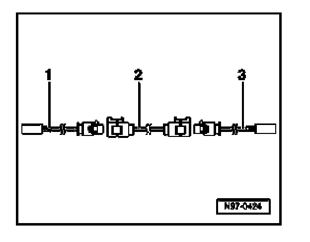

Antenna Cable System, Assembly Overview
Antenna Cable System, Assembly Overview

For servicing purposes, the antenna cable system consists of the following individual antenna cable sections:
1. Adapter cable to radio - Length approx. 30 cm.
2. Connector cable - Available in various lengths.
3. Adapter cable to antenna - Length approx. 30 cm.